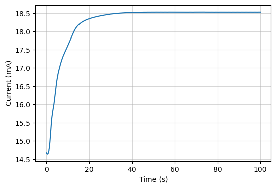

DC Bias¶
This example analyzing the current flow passing through an output electrode when applying a positive DC voltage bias to a NWN. The nanowire junctions are evolved following the Decay HP model as the memristive model of choice.
This can take around a minute or longer depending on the computer.
import numpy as np
import matplotlib.pyplot as plt
import mnns
# Create a NWN
NWN = mnns.create_NWN(
shape = (8, 5),
seed = 5,
density = 14.7
)
# Add four electrodes to the NWN
bottom_l, top_l, bottom_r, top_r = mnns.add_electrodes(
NWN, ["left", 2, 1, [-0.5, 0.5]], ["right", 2, 1, [-0.5, 0.5]]
)
# Set model parameters
model = mnns.models.decay_HP_model
NWN.resistance_function = "linear"
NWN.state_vars = ["x"]
NWN.set_state_var("x", 0.05)
NWN.graph["tau"] = 100
# Set solver parameters
min_time = 0
max_time = 10000
dt = 2.0
tol = 1e-7
t_eval = np.arange(min_time, max_time, dt)
# Define the voltage waveform
def voltage_func(t):
V0 = 20
return np.full_like(t, V0)
# Use the Strukov window function
def window_func(x):
x = np.clip(x, 0, 1)
return x * (1 - x)
# Evolve NWN to find state variables over time
args = (NWN, bottom_l, top_r, voltage_func, window_func)
sol = NWN.evolve(model, t_eval, args=args, ivp_options={"rtol": tol, "atol": tol})
# Fine current though the drain electrode
I = mnns.get_evolution_current(NWN, sol, bottom_l, top_r, voltage_func)
# Scale the quantities by the right units
scaled_V = voltage_func(sol.t) * NWN.units["v0"]
scaled_I = I * NWN.units["i0"]
scaled_t = sol.t * NWN.units["t0"] * 1e-6
# Plot hysteresis curve
fig, ax = plt.subplots(figsize=(6, 4))
ax.plot(scaled_t, scaled_I * 1e3)
ax.grid(alpha=0.5)
ax.set_xlabel("Time (s)")
ax.set_ylabel("Current (mA)")
plt.show()
